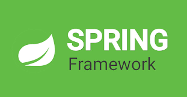
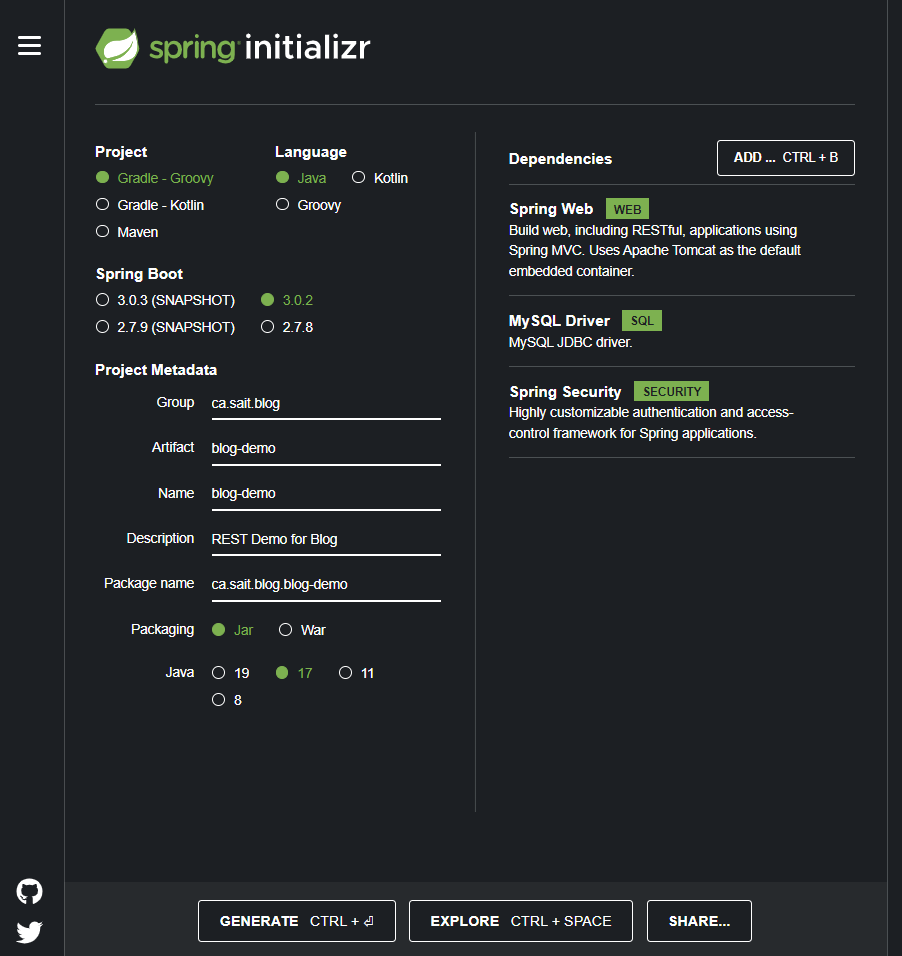
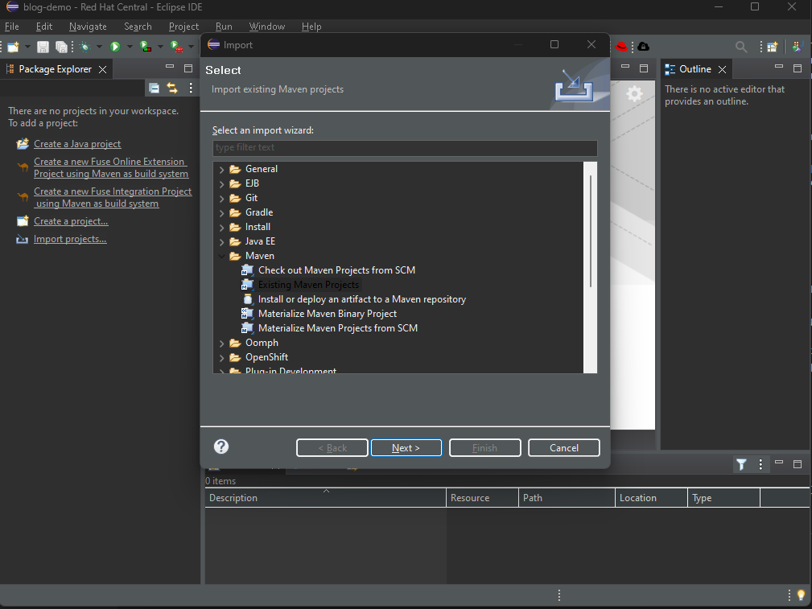
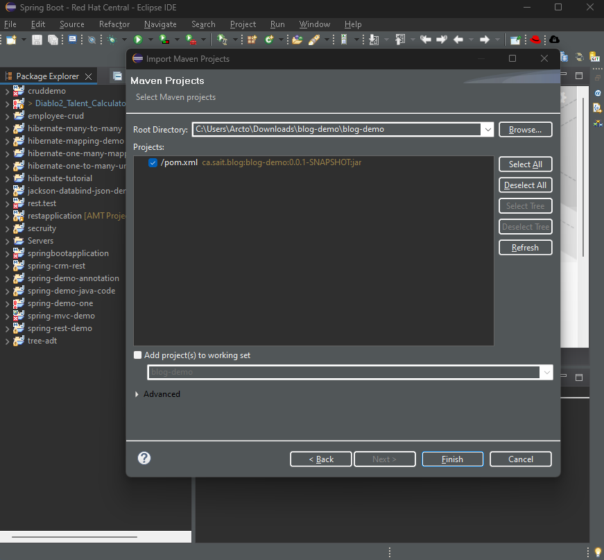
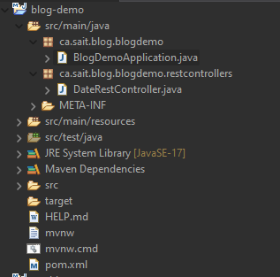
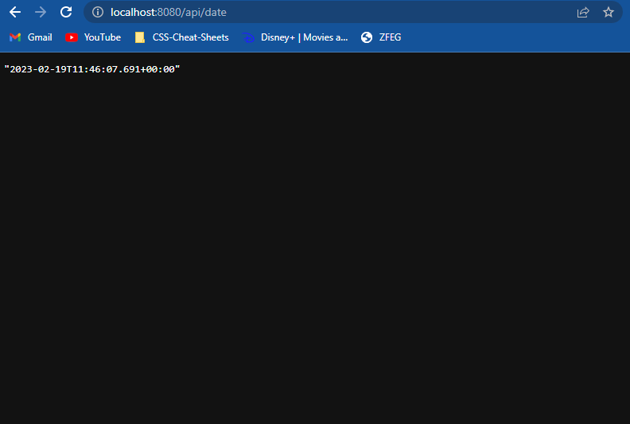

Have you ever found Java to require so much work to setup a simple application? Wouldn’t it be nice to have a preconfigured way to build a Java Application quickly and bring Java back to the modern standard of development? What if I told you there was solution, Spring Boot.
This popular Java framework allows for building and deploying web application quickly. This framework is a sub framework of Spring. This doesn’t mean that Spring Boot is a competitor for Spring but a tool within the Spring technology.
Wait a second, REST what?
REST API or RESTful Web Service is probably one of the best technologies we can use to connect backend applications to frontend applications like React, Angular for example. So, what is REST? Representational State Transfer (REST) is an architecture design for sending data. It allows us to create endpoints on the web to send data from one application to another application via JSON (JavaScript Object Notation).
You may asking why is this so revolutionizing and why do I hear about it everywhere? Well imagine you have an application, written in Java (Can be written in any language), that controls the persistence and retrieval of data from a database. Then you have a React Application (Written in JavaScript/JSX) that display information on the web. Now they are both written in two completely different languages, how can we connect them together?
The answer is REST APIs. Not only can you retrieve the data, but it allows you to perform CRUD (Create, Read, Update, Delete) operations on that data, allowing Java and JavaScript to communicate to one another through HTTP requests.
RESTful API ArchitectureHere is how of how a REST API works, the REST API web server will host four HTTP request and allows the Web Application to send one of four requests:
- GET – Obtains the information from the database.
- POST – Save the information to the database.
- PUT – Update the information to the database.
- DELETE – Delete the information from the database.
Theses requests receive and send JSON objects through the REST API. The backend application will then convert the JSON from a POJO (Plain Old Java Object), if using Java for instance, or to a POJO to allow the REST application to perform a CRUD operation based on the request sent.
What is this Spring you talk off?
Spring is a popular framework for building Java applications. This framework is amazing as it can be used to build many types of applications including, MVC (Model View Controller) full stack websites, RESTful API’s, Hibernate Persistence (Proprietor version of JPA), Spring Messaging (Message based applications).
Spring is a combinations of libraries (JAR files) which have done all the heavy lifting for us and only require us the write boiler plate and the configuration. Its very easy to setup with a project, as all you need to do is includes these JAR files into the project’s build path.
So why use Spring over standard Java? Well Java has no structure, you are free to build an application in any way you want, which sounds great but when it comes to collaborating other developers, and not having theses guidelines that Spring offers, can often lead confusion about the code they wrote. This is one useful reason to use Spring, because it has libraries already made and ready to use, all you need to do is follow their guidelines for the configurations. This makes building projects quick and easy for everybody.
The other great thing is because everyone is following theses guidelines it makes the code more maintainable and easier for other developers working on the project in the future.
Spring Controller Class Java Servlet ClassExamining both Java classes above for mapping HTTP requests to your web application, you can tell by looking at the Servlet Class (Standard Java) that this code is a lot harder to memorize versus the Spring Controller Class (Spring's version of a Servlet). There is no need to extend classes or Override Methods, simply just use the @ notations provided by Spring and let it do all the work for you.
Although Spring is great, it does come with some downsides one of them being the amount of configuration needed is tedious and very prone to human error. Another thing is the need to use a separate web server to run the Web Applications which is also another thing to configurate. Lucky for us, this is where Spring Boot comes in.
Finally, lets talk Spring Boot
The Spring Boot is a tool complements the spring applications in multiple ways. It allows us to develop applications faster, uses default configurations and allows for easy deployment.
The most amazing thing about Spring Boot is the ability to develop applications much faster by allowing us to configure dependencies very quickly. This can be by embedding servers like tomcat into the application or adding database connection quickly or even adding security dependency quickly.
By going to Spring Initializr you can quickly build a spring boot application to open with your IDE. On the right side of the website, you can see the dependencies I have added.
This means that you don’t need a separate external jar files for databases or to have a seperate web server connected to the application. Its can be automatically built in with the Spring Boot Application, allowing for easily deployable application.
Spring Boot eliminates most of the boiler code that is needed from Spring applications by having opinionated defaults settings. Its still highly customized and easy to change theses settings but its not needed most of the time.
As you can see Spring Boot is a great addition inside the Spring toolset.
The Modern Java Application, Creating A Simple Date Endpoint
We can use all these technologies together to build a modern Java backend application which we can be connected to a frontend web application like React, Angular or Vue. It can even be used to create APIs for other companies access your data in JSON format.
Let’s break down how to build a RESTful API with Spring Boot.
Setup
The first step is to go to the Spring Initializr to setup the Spring Boot Application.

1. The option we will choice for this application is Maven as the project build.
2. Java as the language and Spring Boot version 3.0.2 (Select the most recent version that isn't a snapshot).
3. Name the application.
4. For the packaging we want it to be embedded with a web server for an easier way to deploy the application so we will select Jar rather then using a War file to deploy.
5. Select your Java Version, for this I will select Version 17.
6. Dependencies:
- Spring Web: This dependency contains everything needed to create REST Controller for a web application and embeds the Tomcat server into our application
- Spring Boot DevTools: This dependency is great to use when building an application as when you make changes to the code or a propertie file, it will rebuild the application automatically allowing for LiveReload.
- Spring Data JPA: Allows use of Hibernate (JPA). (Do Not use For This Application as we will not be connecting a database)
- MySQL Driver: Select your database Driver (depending on what type of Database you are using) to use for the application. (Do Not use For This Application as we will not be connecting a database)
Click Generate to download the initializr project and unzip the project
Importing The project
First we need to import the initializr project
As we are using a Maven build, we must import the project as an existing Maven project into the IDE
Select the directory where you unzipped the project.
Then select the pom.xml file and click finish.
Go to src/main/java source folder and create a new package which is a sub package of the main package of the application ie. ca.sait.blogdemo.restcontrollers
The Spring Boot application has been setup to scan all sub directory packages of the main application's package.
Create a new class file called DateRestController.java
Creating the REST Controller (Eclipse)
It only takes three steps to create this simple REST controller
- 1. Annotation @RestController: This tells the Spring Boot Application that this is a REST Controller
- 2. Annotation @Request Mapping("/api"): This will setup the web application end point to /api for this controller
- 3. Annotation @GetMapping("date"): When this method is called it will return the current date and time. The Annotation tells the web application that when a get request is sent to the endpoint /api/date to call the method attached (which return the current date and time).
The REST Controller will use a library called Jackson to convert the POJO to JSON to be sent via the GET request. Jackson also converts the JSON information coming in to a POJO. This process is fully automatic and needs no configuring
Starting The Application
Now simply start the application by clicking run BlogDemoApplication in the root package folder.
Once the application has loaded, simply go to your web browser and type http://localhost:8080/api/date or click here and you will see the current date and time.
Click the link for the source code for this simple date application: link
As you can see its very simple to create a REST API. This was just a quick example of setting up a get request but you can also set the requests to POST, PUT, DELETE. Using this combined with a database will allow you to perform CRUD operations. This brings Java into the modern world of web development.